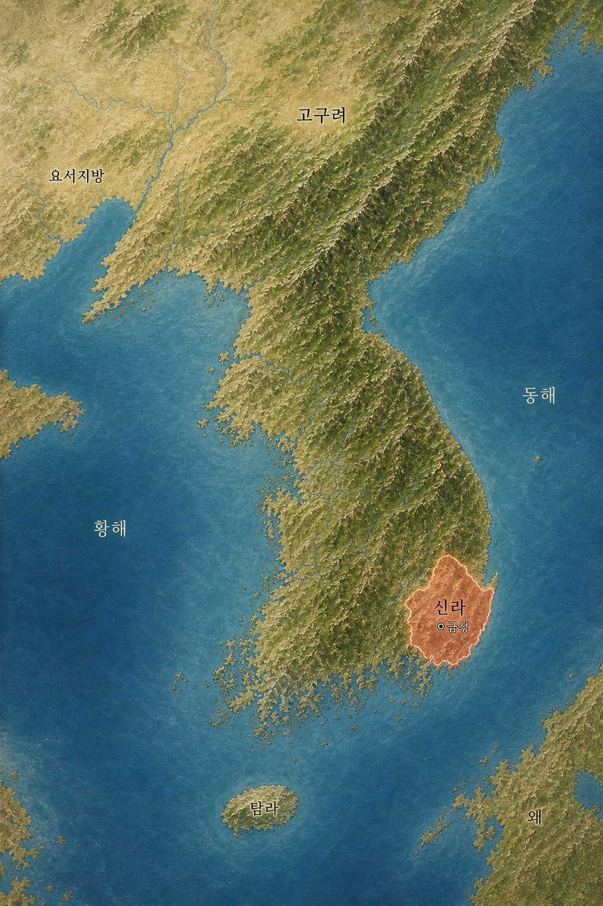

🏺 삼국유사 시간여행 지도
시간 버튼을 눌러 가야 · 신라 · 백제 · 고구려가 넓어지고 좁아지는 모습을 만나 보세요
📍 실제 지도 모양에 맞춰, 나라의 넓이를 알기 쉽게 표시했어요

고구려
백제
신라
가야
다른 나라
이야기
시간 버튼을 눌러 가야 · 신라 · 백제 · 고구려가 넓어지고 좁아지는 모습을 만나 보세요
📍 실제 지도 모양에 맞춰, 나라의 넓이를 알기 쉽게 표시했어요
